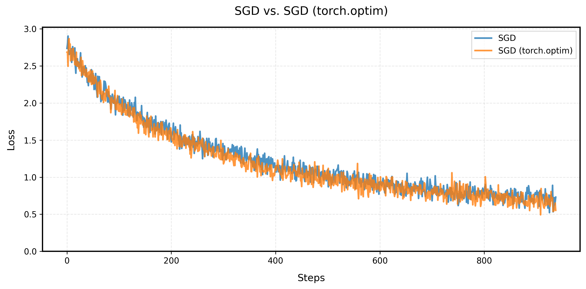
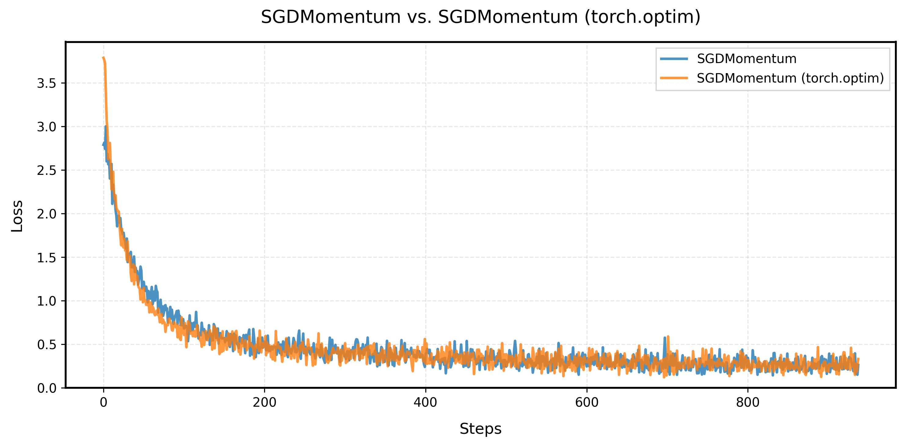
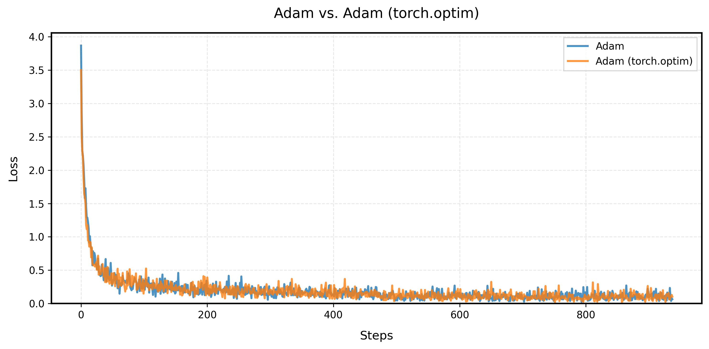
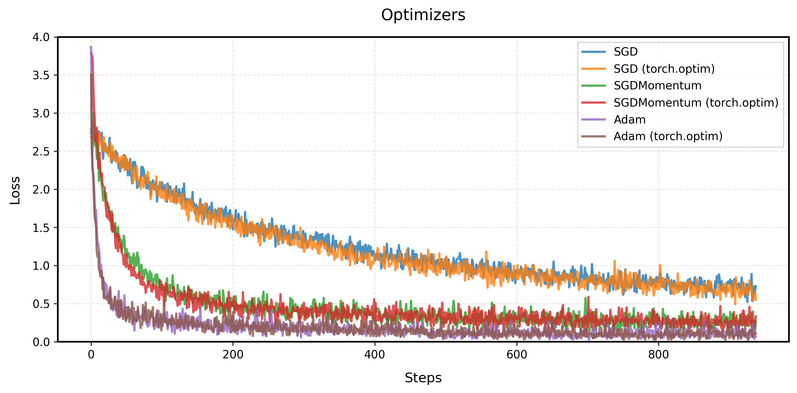

Optimizers: SGD, Momentum, and Adam
Background
Optimizers are essential for deep learning that control how model parameters are updated during training. This blog post explores common optimizers, their customized implementations and efficiency optimization.
The typical training loop of PyTorch is as follows:
for inputs, labels in data_loader:
outputs = model(inputs)
loss = criterion(outputs, labels)
optimizer.zero_grad()
loss.backward()
optimizer.step()What is the optimizer doing for optimizer.zero_grad() and optimizer.step()? It is really simple and straightforward, in this blog, we will implement the optimizers from scratch, and compare the performance with PyTorch built-in implementation.
Optimization Algorithms (SGD, SGD with Momentum, Adam)
The goal of optimization is to find parameters that minimize the loss function . I will explore several commonly used optimizers:
Here I present notions used in the implementations as the following table:
Notions
| Symbol | Definition |
| Model parameters | |
| Learning rate | |
| Gradient of loss w.r.t. parameters | |
| Velocity (momentum) | |
| First moment estimate | |
| Second moment estimate | |
| Momentum decay rate | |
| Adam hyperparameters | |
| Small constant for numerical stability |
SGD (Stochastic Gradient Descent)
The simplest and most intuitive optimization algorithm that updates parameters by subtracting the gradient from the parameters with a learning rate. The basic formula is:
where:
- are the current parameters
- is the learning rate
- is the gradient
SGD with Momentum
SGD with Momentum adds momentum term to stabilize the training and accelerate the convergence, the idea is to update the velocity by adding the gradient and then update the parameters by subtracting the velocity. The basic formula is:
where:
- is the velocity
- is the momentum coefficient
Adam
Background: RMSprop
RMSprop is a variant of SGD with Momentum, the basic idea is to update the second moment by adding the gradient and then update the parameters by subtracting the velocity. The basic formula is:
where:
- is the velocity
- is the momentum coefficient
Adam combines the ideas of momentum and RMSprop. The basic idea is to update the first moment and the second moment by incorporating the gradient, and then update the parameters using these moments. The basic formula is:
where:
- tracks mean of gradients
- tracks variance of gradients
- are decay rates
- are bias-corrected estimates
Experimental results
I implemented the optimizers from scratch (mainly based on this repo), and compared the performance with PyTorch. The results are as follows:
Customized SGD
Here’s a minimal implementation of common optimizers in Python:
class SGD:
def __init__(self, model_params, lr=1e-3):
self.model_params = list(model_params)
self.lr = lr
def zero_grad(self):
for param in self.model_params:
param.grad = None
@torch.no_grad()
def step(self):
for param in self.model_params:
param.sub_(self.lr * param.grad)The learning curve of customized SGD and PyTorch’s SGD are as follows. The learning curve of customized SGD is exactly the same as PyTorch’s built-in SGD.

Customized SGD with Momentum
class SGDMomentum:
def __init__(self, model_params, lr=1e-3, momentum=0.9):
self.model_params = list(model_params)
self.lr = lr
self.momentum = momentum
self.v = [torch.zeros_like(p) for p in self.model_params]
def zero_grad(self):
for param in self.model_params:
param.grad = None
@torch.no_grad()
def step(self):
for param, v in zip(self.model_params, self.v):
v.mul_(self.momentum).add_(param.grad)
param.sub_(self.lr * v)The learning curve of customized SGD with Momentum and PyTorch’s SGD with Momentum are as follows. The learning curve of customized SGD with Momentum matches PyTorch’s SGD with Momentum.

Customized Adam
The implementation below is the customized Adam:
class Adam:
def __init__(self, model_params, lr=1e-3, betas=(0.9, 0.999), eps=1e-8):
self.model_params = list(model_params)
self.lr = lr
self.beta1, self.beta2 = betas
self.eps = eps
self.m = [torch.zeros_like(p) for p in self.model_params] # First moment
self.v = [torch.zeros_like(p) for p in self.model_params] # Second moment
self.t = 0 # Time step counter
def zero_grad(self):
for param in self.model_params:
param.grad = None
@torch.no_grad()
def step(self):
self.t += 1
for i, (param, m, v) in enumerate(zip(self.model_params, self.m, self.v)):
grad = param.grad
m.mul_(self.beta1).add_(grad, alpha=1 - self.beta1)
v.mul_(self.beta2).addcmul_(grad, grad, value=1 - self.beta2)
m_hat = m / (1 - self.beta1 ** self.t)
v_hat = v / (1 - self.beta2 ** self.t)
param.addcdiv_(m_hat, v_hat.sqrt().add_(self.eps), value=-self.lr)
All Optimizers Comparison

Our customized implementation produces exactly the same learning curve as PyTorch’s built-in Adam optimizer. This perfect match validates that our implementation correctly reproduces the Adam, matching PyTorch’s version.
Optimizing the efficiency of optimizers
I also explore how to optimize the efficiency of optimizers. PyTorch built-in optimizers have two hyperparameters that can affect the speed:
foreach(bool): If True, use the faster foreach implementation.fused(bool): If True, use the fused implementation if available.
In the following, I will explore how to optimize the efficiency of optimizers by using torch.compile (fused) and torch._foreach_ (foreach).
use torch.compile()
I tried to use torch.compile, but they didn’t show significant improvements. From pytorch2.5, the torch.compile is introduced. It seems to be very promising and could be used to optimize the efficiency of optimizers. I compared it with the original code, and it shows significant improvements in terms of speed.
| Optimizer | Average Step Time (seconds) | Speed Up (Times) |
| SGD | 0.080922 | - |
| SGD + torch.compile | 0.060843 | 1.33x |
The results show that torch.compile only is very promising and could be used to optimize the efficiency of optimizers.
use torch.foreach
I also tried to use torch._foreach_ to optimize the efficiency of optimizers. Here I used a 2000 layer MLP to test the performance of the optimizers.
class SGD:
def __init__(self, model_params, lr=1e-3):
self.model_params = list(model_params)
self.lr = lr
def zero_grad(self):
for param in self.model_params:
param.grad = None
@torch.no_grad()
def step(self):
torch._foreach_sub_(self.model_params, [self.lr * p.grad for p in self.model_params])After a lot of tweaks, the fastest way I can think of is the following:
@torch.no_grad()
def step(self):
grads = [p.grad for p in self.model_params]
torch._foreach_mul_(grads, -self.lr)
torch._foreach_add_(self.model_params, grads)| Optimizer | Average Step Time (seconds) | Speed Up (Times) |
| mySGD | 0.080922 | 1.00x |
| mySGD + torch.compile | 0.060843 | 1.33x |
| mySGD + foreach | 0.053214 | 1.52x |
| mySGD + foreach + torch.compile | 0.018934 | 4.27x |
| mySGD + (best) | 0.006818 | 11.87x |
| torch SGD | 0.010875 | 7.44x |
| torch SGD with fused | 0.007642 | 10.59x |
| torch SGD with foreach | 0.008306 | 9.74x |
Run on 2000 layer MLP on T4 GPU.
Analysis
The results show that using torch._foreach_ operations provides significant speedup compared to the original implementation. This is because torch._foreach_ operations are optimized for operating on lists of tensors, reducing overhead from Python loops and enabling better parallelization.
With the torch._foreach_mul_ and torch._foreach_add_, the performance of the optimizer is better than PyTorch’s built-in optimizers (though more rigorous comparison is needed).